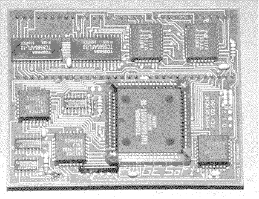

Die PAK68/3 der Zeitschrift c't

68030 Prozessor, 32 Bit, Instruction- und Data-Cache on Chip, PMMU
MC68881/882 FPU (optional)
32KB Second-Level-Cache (optional)
32-50 MHz Taktfrequenz
EPROMs mit einem angepaßten TOS 3.06 auf der PAK (optional)
Umschaltmöglichkeit auf die 68000er CPU (optional)
Durch die FRAK/2 besteht auch die Möglichkeit, bis zu 64MB TT-RAM-
kompatibles Fast-RAM nachzurüsten.
Der HyperCACHE-Turbo-plus von GE SOFT

CPU Takt 8 oder 16MHz
Cachegröße 32 Kilobyte
16Mhz kommen vom Videochip (Pin 39 oder Pin 5 der MCU)
Soundchip (Pin 14) schaltet den Cache ein oder aus (Drahtverbindung)
oder über einen prellfreien Schalter
FASTROM-Betriebsart bei Eprom schneller 100ns Zugriffszeit
Passt auch in 1040ST Computer, wo die CPU unter der Tastatur sitzt
Neuere Version gibt es auch als 1040STE Version
Mit der älteren Version gibt es probleme beim Betrieb mit dem Blitter
weiterblättern
Kapitel Die Beschleunigerboards, Seite 5